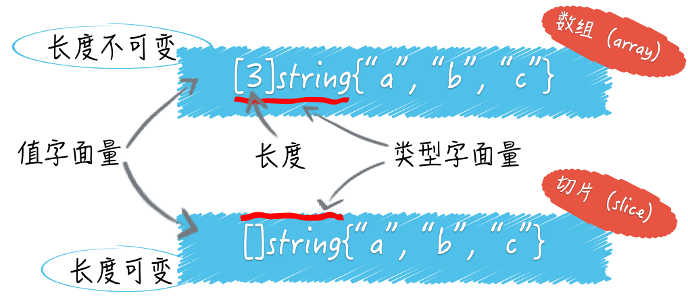
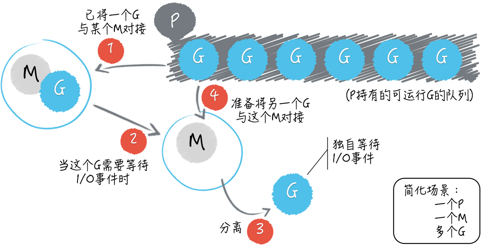

极客时间专栏课《Go语言36讲》 模块二的学习笔记
07 | 数组和切片
初始化数组的方法：
var a [5]int
var a = [5]int{1,2,3,4}
a := [...]int{1,2,3,4,5}// 在数组的声明中 '...' 等于 初始化的元素数量初始化切片的方法：
//使用make
s := make([]string, 3,3)
//用数组初始化
var a = [...]int{1,2,3,4,5}
s := a[1:4]
s1 := a[1:]
//初始化,与数组不同的是没有长度
t := []string{"g", "h", "i"}数组和切片的区别
数组类型的值（以下简称数组）的长度是固定的，而切片类型的值（以下简称切片）是可变长的。

长度和容量
计算长度：len() ；计算容量：cap()；
- 数组：数组的容量永远等于其长度，都是不可变的
- 切片：
- 一般情况下会扩容为原来的两倍
- 当切片原长度 >= 1024 ，GO将会以原容量的1.25倍作为新容量的基准，新容量基准会被调整（不断地与1.25相乘），直到结果不小于原长度与要追加的元素数量之和（以下简称新长度）。最终，新容量往往会比新长度大一些，当然，相等也是可能的。
- 如果我们一次追加的元素过多，以至于使新长度比原容量的 2 倍还要大，那么新容量就会以新长度为基准。注意，与前面那种情况一样，最终的新容量在很多时候都要比新容量基准更大一些。
扩容时切片的底层数组的变化
扩容的时候 Go 语言会生成新的底层数组，也同时生成了新的切片。
在无需扩容时，append函数返回的是指向原底层数组的新切片，而在需要扩容时，append函数返回的是指向新底层数组的新切片append函数总会返回新的切片
语法糖 ...
用法一：函数指定任意数量的形参
func test1(args ...string) {} //可以接受任意个string参数用法二：将slice打散作为参数传递
test1(strss...) //切片被打散传入
08 | container包中的那那些容器
….. 没咋看懂
09 | 字典的操作和约束
为什么字典键的类型会受到约束？
Go语言字典键的类型不可以是 函数类型、字典类型、切片类型。
Go 语言规范规定，在键类型的值之间必须可以施加操作符
==和!=。换句话说，键类型的值必须要支持判等操作。由于函数类型、字典类型和切片类型的值并不支持判等操作，所以字典的键类型不能是这些类型。
如果键的类型是接口类型的，那么键值的实际类型也不能是上述三种类型，否则在程序运行过程中会引发 panic（即运行时恐慌）。
数组类型作为键？？
在值为nil的字典上执行读操作会成功吗，那写操作呢？
除了添加键 - 元素对，我们在一个值为nil的字典上做任何操作都不会引起错误。当我们试图在一个值为nil的字典中添加键 - 元素对的时候，Go 语言的运行时系统就会立即抛出一个 panic。你可以运行一下 demo19.go 文件试试看。
10 | 通道的基本操作
通道类型的值本身就是并发安全的，这也是 Go 语言自带的、唯一一个可以满足并发安全性的类型。
通道的创建
通道的创建需要用到 make 方法
make(chan int, 3)//通道中的值是int类型，传递了第二个参数，标识这是一个带缓冲的通道，容量为 3
make(chan string)//通道中的值是string类型，没有传递第二个参数，是一个不带缓冲的通道通道中元素的接收和发送
元素的接收和发送都要使用 <- 操作符
ch1 :=make(chan int, 3)
//向通道中发送数据
ch1 <- 2
ch1 <- 3
ch1 <- 1
//从通道接收数据
elem1 := <- ch对通道的发送和接收的基本特性
- 对于同一个通道，发送操作之间是互斥的，接收操作之间也是互斥的。
- 发送操作和接收操作中对元素值的处理都是不可分割的。
- 发送操作在完全完成之前会被阻塞。接收操作也是如此。
发送操作和接收操作在什么时候可能被长时间的阻塞？
缓冲通道：如果通道已满，那么对它的所有发送操作都会被阻塞，直到通道中有元素值被接收走。
非缓冲通道：情况要简单一些。无论是发送操作还是接收操作，一开始执行就会被阻塞，直到配对的操作也开始执行，才会继续传递。
特例：对于值为nil的通道，不论它的具体类型是什么，对它的发送操作和接收操作都会永久地处于阻塞状态。它们所属的 goroutine 中的任何代码，都不再会被执行。
发送操作和接收操作在什么时候会引发 panic？
对于一个已初始化，但并未关闭的通道来说，收发操作一定不会引发 panic。但是通道一旦关闭，再对它进行发送操作，就会引发 panic。
另外，如果我们试图关闭一个已经关闭了的通道，也会引发 panic。注意，接收操作是可以感知到通道的关闭的，并能够安全退出。
11 | 通道的高级玩法
单向通道
所谓单向通道就是，只能发不能收，或者只能收不能发的通道。一个通道是双向的，还是单向的是由它的类型字面量体现的。
通道字面量 <- 在关键字 chan 左边：表示这个通道是只能收不能发的单向通道
var uselessChan = make(<-chan int, 1)通道字面量<- 在关键字 chan 右边，表示这个通道只能发不能收
var uselessChan = make(chan<- int, 1)单向通道的应用价值
概括地说，单向通道最主要的用途就是约束其他代码的行为。
可以用来在声明函数的时候规范参数
func SendInt(ch chan<- int) {
ch <- rand.Intn(1000)
}
func getIntChan() <-chan int {
num := 5
ch := make(chan int, num)
for i := 0; i < num; i++ {
ch <- i
}
close(ch)
return ch
}select 语句
select语句只能与通道联用
select {
case <-intChannels[0]:
fmt.Println("The first candidate case is selected.")
case <-intChannels[1]:
fmt.Println("The second candidate case is selected.")
case elem := <-intChannels[2]: //可以把通道的值赋给变量
fmt.Printf("The third candidate case is selected, the element is %d.\n", elem)
default:
fmt.Println("No candidate case is selected!")
}- 如果加入了默认分支，那么无论涉及通道操作的表达式是否有阻塞，
select语句都不会被阻塞。
- 如果没有加入默认分支，那么一旦所有的
case表达式都没有满足求值条件，那么select语句就会被阻塞。直到至少有一个case表达式满足条件为止。12 | 使用函数的正确姿势
函数是一等公民
在go语言中，函数是一等的公民，也是一等的 数据类型
函数类型属于引用类型，零值是 nilpackage module2 import ( "fmt" "testing" ) // 声明了函数类型 Printer type Printer func(contents string) (n int, err error) // printToStd 函数的签名和Printer是一致的，因此printToStd是Printer的一个实现 func printToStd(contents string) (n int, err error) { return fmt.Println(contents) } func Test1(t *testing.T) { var p Printer p = printToStd _,_ = p("something") }函数的签名其实就是函数的参数列表和结果列表的统称，它定义了可用来鉴别不同函数的那些特征，同时也定义了我们与函数交互的方式。
只要两个函数的参数列表和结果列表中的元素顺序及其类型是一致的，我们就可以说他们是一样的函数，或者说是实现了同一个函数类型的函数。
高阶函数
高阶函数可以满足以下两个条件
- 接收其他函数作为参数返回
- 把其他函数作为结果返回
只要满足了其中任意一个特点就可以说这个函数是一个高阶函数
type operate func(x, y int) int
func calculate(x int, y int, op operate) (int, error) {
if op == nil {
return 0, errors.New("invalid operation")
}
return op(x, y), nil
}
type calculateFunc func(x int, y int) int
func genCalculator(op operate) calculateFunc {
if op == nil {
panic("op is err")
}
return func(x int, y int) int {
return op(x, y)
}
}
func Test2(t *testing.T) {
diff, _ := calculate(101, 5898, func(x, y int) int {
return x - y
})
t.Log("101 - 5898 =", diff)
multiFunc := genCalculator(func(x, y int) int {
return x * y
})
multiValue := multiFunc(25, 4)
t.Log("4 X 25 = ", multiValue)
}函数传参
值类型数据，每次传参会复制参数值，不会影响原始值（数组是值类型）
对于引用类型，比如：切片、字典、通道，像上面那样复制它们的值，只会拷贝它们本身而已，并不会拷贝它们引用的底层数据。也就是说，这时只是浅表复制，而不是深层复制。
13 | 结构体及其方法的使用法门
函数是独立的程序实体，可以声明有名字的函数也可以声明没有名字的函数。
方法却不同，它需要有名字，不能被当作值来看待，最重要的是，它必须隶属于某一个类型。方法所属的类型会通过其声明中的接收者（receiver）声明体现出来。
接收者声明就是在关键字func和方法名称之间的圆括号包裹起来的内容，其中必须包含确切的名称和类型字面量。
接收者的类型其实就是当前方法所属的类型，而接收者的名称，则用于在当前方法中引用它所属的类型的当前值。
// AnimalCategory 代表动物分类学中的基本分类法。
type AnimalCategory d {
kingdom string // 界。
phylum string // 门。
class string // 纲。
order string // 目。
family string // 科。
genus string // 属。
species string // 种。
}
func (ac AnimalCategory) String() string {
return fmt.Sprintf("%s%s%s%s%s%s%s",
ac.kingdom, ac.phylum, ac.class, ac.order,
ac.family, ac.genus, ac.species)
}嵌入字段
type Animal struct {
scientificName string // 学名。
AnimalCategory // 动物基本分类。
}字段声明AnimalCategory代表了Animal类型的一个嵌入字段。
调用嵌入字段的方式
var a Animal
...
a.AnimalCategory // 引用AnimalCategory
func (a Animal) Category() string {
return a.AnimalCategory.String()
}
func (a Animal) String() string {
return "这个方法会屏蔽掉嵌入类型的 String方法"
}嵌入字段是一种组合的方式
最后，再次强调，嵌入字段是实现类型间组合的一种方式，这与继承没有半点儿关系。Go 语言虽然支持面向对象编程，但是根本就没有“继承”这个概念。
指针方法和值方法的区别
值方法
func (cat Cat) SetName(name string) {
}指针方法
func (cat Cat) SetName(name string) {
cat.name = name
}值方法对元素值的修改不会体现在原值上
值方法的接收者是该方法所属的那个类型值的一个副本。我们在该方法内对该副本的修改一般都不会体现在原值上，除非这个类型本身是某个引用类型（比如切片或字典）的别名类型。
值类型的方法和指针类型的方法不在一个方法集合中
一个自定义数据类型的方法集合中仅会包含它的所有值方法，而该类型的指针类型的方法集合却囊括了前者的所有方法，包括所有值方法和所有指针方法。
严格来讲，我们在这样的基本类型的值上只能调用到它的值方法。但是，Go 语言会适时地为我们进行自动地转译，使得我们在这样的值上也能调用到它的指针方法。
比如，在Cat类型的变量cat之上，之所以我们可以通过cat.SetName(“monster”)修改猫的名字，是因为 Go 语言把它自动转译为了(&cat).SetName(“monster”)，即：先取cat的指针值，然后在该指针值上调用SetName方法。
方法集合和接口实现有关，实现的指针方法，则只有指针类型才是接口的实现
在后边你会了解到，一个类型的方法集合中有哪些方法与它能实现哪些接口类型是息息相关的。如果一个基本类型和它的指针类型的方法集合是不同的，那么它们具体实现的接口类型的数量就也会有差异，除非这两个数量都是零。
比如，一个指针类型实现了某某接口类型，但它的基本类型却不一定能够作为该接口的实现类型。
14 | 接口类型的合理运用
前导
接口类型声明中的这些方法所代表的就是该接口的方法集合。一个接口的方法集合就是它的全部特征。
type Pet interface {
SetName(name string)
Name() string
Category() string
}只要一个数据类型的方法集合中有 SetName Name Category 这三个方法，那么这个类型就是接口Pet的实现类型。
这种实现方式叫做 Duck typing （鸭子类型）
type Dog struct {
name string // 名字。
}
func (dog *Dog) SetName(name string) {
dog.name = name
}
func (dog Dog) Name() string {
return dog.name
}
func (dog Dog) Category() string {
return "dog"
}Dog 的值类型不是Pet的实现，Dog 的指针类型才是Pet的实现。
dog := Dog{"littile pig"}
var pet Pet = &dog对于上面的代码来说：我们赋给pet的值 &dog 称为他的实际值（也叫动态值），该值的类型叫做这个变量的实际类型（也称动态类型）
动态类型的叫法是相对于静态类型来讲的，对于pet来说他的静态类型就是Pet，并且永远是；动态类型会随着赋给它的值改变。在赋予接口类型值之前他的动态类型是不存在的。
当我们为一个接口变量赋值时会发生什么？
当我们给一个接口变量赋值的时候，该变量的动态类型会与它的动态值一起被存储在一个专用的数据结构中（iface）。然后将iface结构体的值赋给接口变量。
接口组合
接口组合时，同名的方法之间会发生冲突，无法通过编译
type Animal interface {
ScientificName() string
Category() string
}
type Pet interface {
Animal
Name() string
}15 | 关于指针的有限操作
指针
从传统意义上来说，指针是一个指向某个确切的内存地址的值。这个内存地址可以是任何数据或代码的起始地址，比如某个变量，某个字段或某个函数。
GO语言中还有其他几样东西可以代表“指针”。
unintptr
该类型实际上是一个数值类型，也是Go语言内建的数据类型之一。
根据当前计算机的计算架构的不同，他可以存储32位或者64位的无符号整数，可以代表任何指针的位（bit）模式，也就是原始的内存地址。
unsafe.Pointer
Go语言标准库中的unsafe包。unsafe包中有一个类型叫做Pointer，也代表“指针”
unsafe.Pointer可以表示任何指向可寻址的值的指针，同时他也是前边提到的指针值和unitptr之间的桥梁。也就是说，通过它，我们可以在这两种值上进行双向的转换，这里有一个很关键的词，可寻址的（addressable）。
不可寻址的几种情况
- 不可变的值不可寻址。常量、基本类型的值字面量、字符串变量的值、函数以及方法的字面量以及对它们的调用表达式的结果值都是如此。其实这样规定也有安全性方面的考虑。
- 绝大多数被视为临时结果的值都是不可寻址的。算术操作的结果值属于临时结果，针对值字面量的表达式结果值也属于临时结果。但有一个例外，对切片字面量的索引结果值虽然也属于临时结果，但却是可寻址的。
- 若拿到某值的指针可能会破坏程序的一致性，那么就是不安全的，该值就不可寻址。由于字典的内部机制，对字典的索引结果值的取址操作都是不安全的。另外，获取由字面量或标识符代表的函数或方法的地址显然也是不安全的。
不可寻址值在使用上的限制
无法使用 & 获取指针
不能调用指针方法。因为无法转化为指针。
不能使用 ++ 或 – 表达式，不能作为赋值操作符和range操作符左边的表达式。字典字面量和字典变量索引表达式的结果值例外
怎样通过unsafe.Pointer操纵可寻址的值
首先说明，这是一项黑科技。它可以绕过 Go 语言的编译器和其他工具的重重检查，并达到潜入内存修改数据的目的。这并不是一种正常的编程手段，使用它会很危险，很有可能造成安全隐患。
dog := Dog{"little pig"} dogP := &dog dogPtr := unitptr(unsafe.Pointer(dogP)) namePtr := dogPtr + unsafe.Offsetof(dogP.name) nameP := (*string)(unsafe.Pointer(namePtr))代码中的转换规则：
一个指针值（比如*Dog类型的值）可以被转换为一个unsafe.Pointer类型的值，反之亦然。
一个uintptr类型的值也可以被转换为一个unsafe.Pointer类型的值，反之亦然。
一个指针值无法被直接转换成一个uintptr类型的值，反过来也是如此。
16 | go语句及其执行规则（上）
Don’t communicate by sharing memory; share memory by communicating.
不要通过共享数据来通讯，恰恰相反，要以通讯的方式共享数据。
进程与线程
进程：程序的执行过程，是运行着的程序的代表。一个进程就是某个程序运行时的一个产物。
线程：线程总是在进程之内的，他可以被视为进程中运行着的控制流（或者说代码执行的流程）。每个进程的第一个线程都随着该进程的启动被创建，他们可以被称为器所属进程的主线程。主线程以外的进程都由进程中已存在的线程创建出来，由代码显示的创建和销毁。
Go 语言的运行时（runtime）系统会帮助我们自动地创建和销毁系统级的线程。这里的系统级线程指的就是我们刚刚说过的操作系统提供的线程。
Go语言中的用户级线程（goroutine）由Go语言程序控制，它们的创建和销毁并不用通过操作系统去做。
Go语言的并发编程模型
G ：goroutine，协程
P ：processor， 调度器，负责调度协运行，申请系统资源
M ：machine， 系统级线程

协程的运行
package main
import "fmt"
func main() {
for i := 0; i < 10; i++ {
go func() {
fmt.Println(i)
}()
}
}知识点1：启用协程后，主函数不会等待协程运行结束。主goroutine执行结束后，当前GO程序会直接结束运行。
知识点2：闭包中引用的变量是指针引用（或者说，闭包中的变量只有在被使用的时候才会被求值）
17 | go语句及其执行规则（下）
如何让主goroutine等待其他goroutine
方法一：让主goroutine小睡一会
for i := 0; i < 10; i++ {
go func() {
fmt.Println(i)
}()
}
time.Sleep(time.MillionSecond * 500) //sleep等待500ms方法二：通道
ch := make(chan struct{}, 10, 10)
for i := 0; i < 10; i++ {
go func() {
fmt.Println(i)
ch<-struct{}{}
}()
}
for i := 0; i < 10; i++ {
<-ch
}方法三：使用Sync.WaitGroup
var wg sync.WaitGroup
for i := 0; i< 10; i++ {
wg.add(1)
go func(){
fmt.Println(i)
wg.Done()
}()
}
wg.Wait()如何让goroutine顺序执行
高级点的说法，这叫自旋
var count uint32
trigger := func(i uint32, fn func()) {
for{
if n := atomic.LoadUint32(&count); i == i {
fn()
atomic.AddUint32(&count, 1)
break
}
time.Sleep(time.Nanosecond)//sleep 1纳秒
}
}
for i = uint32(0); i < 10; i++ {
go func(i uint32) {
fn := func() {
fmt.Println(i)
}
trigger(i, fn)
}(i)
trigger(10, func() {})//这里入参10 会让主程序最后结束
}18 | if语句、for语句和switch语句
for range
当使用一个返回值接收range时接收到的是迭代变量的索引
numbers1 := []int{5, 6, 7, 8}
for index := range numbers1 {
fmt.Print(index, " ")
}
// 输出为 0 1 2 3使用range时的注意事项
range表达式只会在for语句开始执行时被求值一次，无论后边会有多少次迭代；
range表达式的求值结果会被复制，也就是说，被迭代的对象是range表达式结果值的副本而不是原值。
numbers2 := [...]int{1, 2, 3, 4, 5, 6} maxIndex = len(numbers2) -1 for i, v := range numbers2 { if i == maxIndex { numbers2[0] += v } else { numbers2[i+1] += v } } fmt.Println(numbers2) // 输出 [7 3 5 7 9 11]使用 range 迭代切片时情况不同，引用值复制的是引用
numbers3 := []int{1, 2, 3, 4, 5, 6} maxIndex = len(numbers3) -1 for i, v := range numbers3 { if i == maxIndex { numbers3[0] += v } else { numbers3[i+1] += v } } fmt.Println(numbers3) // 输出 [22 3 6 10 15 21]在range中获取迭代元素引用
numbers3 := []int{1, 2, 3, 4, 5, 6} numbers4 := []int{} maxIndex = len(numbers3) -1 for _, e := range numbers3 { numbers4=append(numbers4, &e) } fmt.Println(numbers4) //里边所有的元素都是 0x14000016118switch
switch语句对switch表达式的结果类型，以及各个case表达式中子表达式的结果类型都是有要求的。毕竟，在 Go 语言中，只有类型相同的值之间才有可能被允许进行判等操作。
switch语句不允许case表达式中的子表达式结果值存在相等的情况
19 | 错误处理（上）
没啥东西 略。。。。
20 | 错误处理（下）
扁平的错误体系和立体的错误体系
21 | panic函数、recover函数以及defer语句（上）
没啥东西 略。。。
22 | panic函数、recover函数以及defer语句（下）
多个defer的运行顺序是后进先出